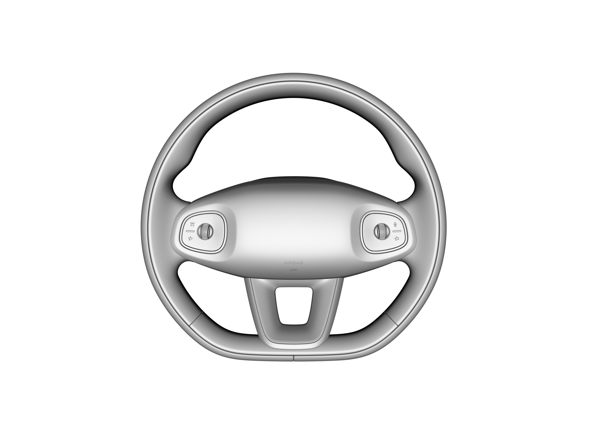

方向盘开关
方向盘开关两侧均设有滚轮及按键，可用拇指向右或向左拨动滚轮，也可中间按下滚轮或向上或向下滚动滚轮。
方向盘开关按键信号LIN通讯，背景光由硬线控制。

左侧滚轮向上/向下滚动：提高/降低巡航速度（后视镜调节场景可控制左侧后视镜向上/向下调节）。
左侧滚轮右拨/左拨：※巡航时距增加/减少（后视镜调节场景可控制左侧后视镜向右/向左调节）。
右侧滚轮向上/向下滚动：音量增加/减小(后视镜调节场景：右侧后视镜向上/向下调节;仪表菜单编辑场景：仪表菜单向上一个/下一个切换)。
右侧滚轮左拨：上一曲/挂断电话/(后视镜调节场景：右侧后视镜向左调节)；长按为媒体进度快退/(后视镜调节场景：右侧后视镜向左调节)。
右侧滚轮右拨：下一曲/接听电话/(后视镜调节场景：右侧后视镜向右调节)；长按为媒体进度快进/(后视镜调节场景：右侧后视镜向右调节)。
: 功能自定义按键1；长按唤出自定义按键浮窗。
: 功能自定义按键2；长按唤出自定义按键浮窗。
: 驾驶模式切换。
: 语音助手，※长按为对外喊话
左侧滚轮中间按键向下按压：※360 影像打开/关闭。如未配置360全景功能，按键可按压，无功能响应。
右侧滚轮中间按键向下按压：OK/(媒体播放/暂停)；长按触发仪表编辑场景\仪表编辑场景下，长按重置选中的驾驶信息。（注：仪表编辑场景下，5S 无操作，自动退出仪表编辑场景）
同时长按两侧滚轮中间按键时间大于约8s,可以进行车机重启。